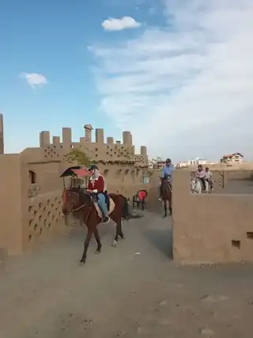

نشاط خارجي · تجربة ركوب الخيل
ركوب الخيل قرب مشهد: ما الذي يجب معرفته قبل الحجز؟

إذا كنت ترغب في إضافة نشاط مختلف إلى رحلتك في مشهد، فقد تكون تجربة ركوب الخيل خياراً مناسباً لبعض الزوار. لكن طبيعة الجولة وموقعها ومستوى المشاركين وشروط السلامة تختلف من مركز إلى آخر؛ لذلك لا يكفي اختيار صورة جميلة أو وصف عام للمسار.
حدد نوع التجربة التي تبحث عنها
قد تكون الجولة داخل ساحة تدريب، أو في مسار طبيعي خارج المدينة، أو ضمن نشاط ترفيهي ينظمه مركز فروسية. اسأل عن الموقع الدقيق ونقطة الانطلاق ومدة النشاط والمسار وما إذا كانت التجربة مخصصة للمبتدئين أو لمن لديهم خبرة سابقة.
هل تناسب الأطفال والعائلة؟
لا توجد قاعدة واحدة تنطبق على كل المراكز. يحدد مقدم الخدمة الحد الأدنى للعمر والطول أو الوزن وشروط مرافقة الطفل، كما يقرر المدرب ما إذا كان الحصان والمسار مناسبين للمشارك. أرسل أعمار أفراد المجموعة وأي خبرة سابقة قبل طلب الحجز، ولا تجبر طفلاً على الركوب إذا كان خائفاً أو غير راغب.
السلامة قبل المتعة
- اسأل عن خبرة المدرب أو المشرف الذي سيرافق المجموعة.
- تحقق من توفر خوذة ومعدات مناسبة لكل مشارك.
- اسأل كيف يختار المركز الحصان وفق خبرة الراكب وبنيته.
- اعرف ما إذا كان هناك شرح قصير قبل بدء الجولة.
- اسأل عن سياسة إيقاف النشاط إذا تغير الطقس أو لم يكن المشارك مرتاحاً.
- تحقق من المسؤولية والتغطية في حال وقوع إصابة، وما الذي تتضمنه الرسوم.
الموقع والطقس والملابس
تختلف المسارات والظروف بحسب الموسم والطقس وموقع المركز. اسأل عن طبيعة الأرض وما إذا كان المسار يتضمن صعوداً أو أرضاً غير مستوية أو عبوراً قرب الماء. ارتدِ حذاءً مغلقاً وملابس مريحة، واتبع تعليمات المدرب بشأن الأغراض التي يمكن حملها أثناء الركوب.
ما الذي يشمله السعر؟
اطلب توضيحاً مكتوباً لما إذا كان السعر يشمل وقت الركوب والمعدات والمدرب والنقل من الفندق أو يقتصر على دخول المركز. تأكد من عدد المشاركين ومدة الجولة وسياسة التأجيل والإلغاء قبل الدفع.
كيف أساعدك في التنسيق؟
أنا حسين، ويمكنني الاستفسار عن الخيارات المتاحة في تاريخك ومراجعة تفاصيل الموقع والخدمة والتكلفة مع مقدم النشاط. لا أؤكد وجود حجز أو مدرب أو مسار قبل الحصول على تأكيد مباشر من الجهة المنظمة.
إذا كنت تخطط لرحلة عائلية، راجع دليل السفر مع الأسرة ودليل الحدائق والتنزه، ويمكنك إضافة زيارة إلى طرقبه وشانديز إذا كان الوقت مناسباً.
أسئلة شائعة
هل ركوب الخيل مناسب للأطفال؟
يعتمد على عمر الطفل وشروط المركز والحصان والمدرب. اطلب تأكيد الحد الأدنى للعمر والطول أو الوزن قبل الحجز.
هل تشمل الجولة النقل من الفندق؟
ليس بالضرورة. اسأل عما إذا كان النقل مشمولاً أم يُحسب بشكل منفصل.
هل يمكن الركوب دون خبرة سابقة؟
بعض المراكز قد توفر تجربة للمبتدئين، لكن يجب تأكيد ذلك واختيار المسار والحصان بتوجيه المدرب.
أرسل تاريخ زيارتك وعدد المسافرين والوجهات التي تهمك، وسأراجع معك ما يمكن تنسيقه بعد تأكيد التوفر والسعر. تواصل مع حسين عبر واتساب